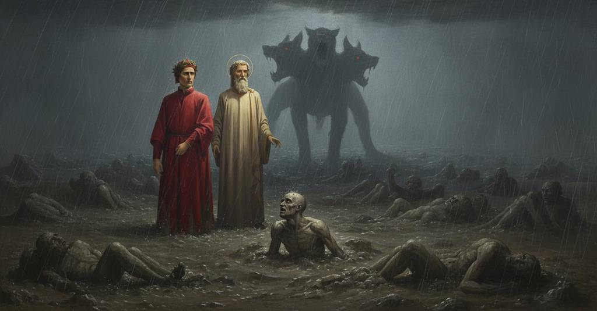

Inferno — Canto 6

Nel terzo cerchio, Dante e Virgilio placano Cerbero, incontrano il goloso Ciacco, che profetizza le lotte di Firenze e indica altri dannati, e poi apprendono che dopo il Giudizio le pene aumenteranno, giungendo infine a Pluto. In the third circle, Dante and Virgil calm Cerberus, meet the glutton Ciacco, who prophesies Florence’s conflicts and identifies other damned souls, and then learn that punishments will increase after Judgment, finally reaching Plutus. 第三の圏で、ダンテとウェルギリウスはケルベロスを鎮め、大食の罪人チャッコに会い、彼はフィレンツェの争いを予言してほかの亡者たちを示し、二人はその後、審判の後には苦しみが増すと知って、ついにプルートに至る。
1
Al tornar de la mente, che si chiuse
Upon the return of my mind, which had closed
閉ざされていた意識が戻ると、
2
dinanzi a la pietà d’i due cognati,
before the pity of the kindred pair,
二人の姻戚への憐れみのあまり、
3
che di trestizia tutto mi confuse,
which with sadness had wholly confused me,
悲しみですっかり我を失っていたのだが、
4
novi tormenti e novi tormentati
new torments and new tormented ones
新たな苦罰と新たな罰せられた者たちを
5
mi veggio intorno, come ch’io mi mova
I see around me, however I may move
私は周りに見る、私がどう動こうとも、
6
e ch’io mi volga, e come che io guati.
and I may turn, and however I may gaze.
どう向きを変えようとも、どう見つめようとも。
7
Io sono al terzo cerchio, de la piova
I am in the third circle, of the rain
私は第三の圏にいる、そこは雨の圏、
8
etterna, maladetta, fredda e greve;
eternal, accursed, cold, and heavy;
永遠の、呪われた、冷たく重い雨。
9
regola e qualità mai non l’è nova.
its rule and quality are never new.
その法則と質に決して変わりはない。
10
Grandine grossa, acqua tinta e neve
Coarse hail, dark water, and snow
大粒の雹、黒ずんだ水、そして雪が
11
per l’aere tenebroso si riversa;
pour down through the tenebrous air;
暗い大気の中を降り注ぎ、
12
pute la terra che questo riceve.
the earth that receives this putrefies.
これを受ける大地は悪臭を放つ。
13
Cerbero, fiera crudele e diversa,
Cerberus, a cruel and monstrous beast,
ケルベロス、残忍で奇怪な獣が、
14
con tre gole caninamente latra
with three throats barks in a dog-like fashion
三つの喉で犬のように吠えている、
15
sovra la gente che quivi è sommersa.
over the people who here are submerged.
ここに沈められている人々の上で。
16
Li occhi ha vermigli, la barba unta e atra,
His eyes are crimson, his beard greasy and black,
その目は赤く、髭は脂ぎって黒く、
17
e ’l ventre largo, e unghiate le mani;
and his belly large, and his hands are clawed;
腹は大きく、手には鉤爪があり、
18
graffia li spirti ed iscoia ed isquatra.
he claws the spirits and flays and quarters them.
亡者たちを搔きむしり、皮を剥ぎ、引き裂く。
19
Urlar li fa la pioggia come cani;
The rain makes them howl like dogs;
雨は彼らを犬のように吠えさせ、
20
de l’un de’ lati fanno a l’altro schermo;
with one of their sides they make a screen for the other;
彼らは片側でもう片側を庇い、
21
volgonsi spesso i miseri profani.
often the wretched profane ones turn themselves.
哀れな罪人たちは頻繁に寝返りを打つ。
22
Quando ci scorse Cerbero, il gran vermo,
When Cerberus, the great worm, perceived us,
我々を見つけた時、ケルベロス、その巨大な虫けらは、
23
le bocche aperse e mostrocci le sanne;
he opened his mouths and showed us his fangs;
口々を開き、我々に牙を見せた。
24
non avea membro che tenesse fermo.
he had no limb that he held still.
じっとしている肢体は一つもなかった。
25
E ’l duca mio distese le sue spanne,
And my leader spread out his hands,
すると我が導き手は両手を広げ、
26
prese la terra, e con piene le pugna
took up earth, and with his fists full
大地の土を掴み、両の拳に満たして
27
la gittò dentro a le bramose canne.
threw it into the craving gullets.
その貪欲な喉笛の中に投げ込んだ。
28
Qual è quel cane ch’abbaiando agogna,
As is that dog that barking craves,
吠えながら餌を欲しがる犬が、
29
e si racqueta poi che ’l pasto morde,
and grows quiet then when it bites the food,
食べ物に噛みつくと静かになり、
30
ché solo a divorarlo intende e pugna,
since only to devour it he strains and struggles,
ただそれを貪り食うことだけに努め争うように、
31
cotai si fecer quelle facce lorde
so became those filthy faces
あの汚らわしい顔つきはそのようになった、
32
de lo demonio Cerbero, che ’ntrona
of the demon Cerberus, who so thunders at
魂たちを轟音で聾する鬼ケルベロスの顔は、
33
l’anime sì, ch’esser vorrebber sorde.
the souls, that they would wish to be deaf.
彼らが自ら聾者になりたいと願うほどの。
34
Noi passavam su per l’ombre che adona
We were passing over the shades that the heavy rain
我らは重い雨が打ち据える影の上を通り過ぎ、
35
la greve pioggia, e ponavam le piante
prostrates, and placed our soles
我らの足裏を置いた
36
sovra lor vanità che par persona.
upon their emptiness which seems a person.
人に見える彼らの空虚さの上に。
37
Elle giacean per terra tutte quante,
They were all lying on the ground,
彼らはみな地に横たわっていた、
38
fuor d’una ch’a seder si levò, ratto
except for one who sat up, quickly
一人の者を除いて、そいつは座った姿勢に素早く起き上がった、
39
ch’ella ci vide passarsi davante.
as soon as he saw us pass before him.
我らが目の前を通り過ぎるのを見るや。
40
«O tu che se’ per questo ’nferno tratto»,
“O you who are drawn through this Hell,”
「おお、この地獄を引かれてゆくお前」
41
mi disse, «riconoscimi, se sai:
he said to me, “recognize me, if you can:
そいつは私に言った、「私を思い出せ、もしできるなら。
42
tu fosti, prima ch’io disfatto, fatto».
you were made before I was unmade.”
私が滅びる前に、お前は生まれたのだから」。
43
E io a lui: «L’angoscia che tu hai
And I to him: “The anguish that you have
そして私は彼に言った。「お前が受けている苦悩が
44
forse ti tira fuor de la mia mente,
perhaps pulls you from my memory,
おそらくお前を私の記憶から引き離し、
45
sì che non par ch’i’ ti vedessi mai.
so that it seems I never saw you.
私がお前を見たことがあるとは思えないほどだ。
46
Ma dimmi chi tu se’ che ’n sì dolente
But tell me who you are that in so sad
だが言え、お前は何者なのだ、かくも悲痛な
47
loco se’ messo, e hai sì fatta pena,
a place are put, and have so foul a punishment,
場所に置かれ、かくもひどい罰を受け、
48
che, s’altra è maggio, nulla è sì spiacente».
that, if another is greater, none is so displeasing.”
他により大きな罰があっても、これほど不快なものはない」。
49
Ed elli a me: «La tua città, ch’è piena
And he to me: “Your city, which is so full
そして彼は私に言った。「お前の都市は、満ちており、
50
d’invidia sì che già trabocca il sacco,
of envy that the sack already overflows,
嫉妬で、すでに袋から溢れるほどだ、
51
seco mi tenne in la vita serena.
held me with it in the serene life.
その都市が、私を穏やかな生の中に留めていた。
52
Voi cittadini mi chiamaste Ciacco:
You citizens called me Ciacco:
お前たち市民は私をチャッコと呼んだ。
53
per la dannosa colpa de la gola,
for the damning sin of gluttony,
大食という破滅的な罪のために、
54
come tu vedi, a la pioggia mi fiacco.
as you see, I am weakened by the rain.
お前が見るとおり、私は雨に打たれて衰弱している。
55
E io anima trista non son sola,
And I, sad soul, am not alone,
そして私、悲しき魂は一人ではない、
56
ché tutte queste a simil pena stanno
for all of these for a similar sin
なぜなら、これらすべての者たちが同様の罰に服しているからだ
57
per simil colpa». E più non fé parola.
stand in a similar punishment.” And he spoke no more words.
同様の罪のために」。そしてそれ以上言葉を発しなかった。
58
Io li rispuosi: «Ciacco, il tuo affanno
I answered him: “Ciacco, your suffering
私は彼に答えた。「チャッコよ、お前の苦しみは
59
mi pesa sì, ch’a lagrimar mi ’nvita;
so weighs upon me that it invites me to weep;
私に重くのしかかり、涙を誘う。
60
ma dimmi, se tu sai, a che verranno
but tell me, if you know, to what will come
だが言え、もしお前が知るなら、どうなるのか
61
li cittadin de la città partita;
the citizens of the divided city;
分裂した都市の市民たちは。
62
s’alcun v’è giusto; e dimmi la cagione
if any there are just; and tell me the reason
そこに正しい者はいるのか。そして私に理由を言え
63
per che l’ha tanta discordia assalita».
why such great discord has assailed it.”
なぜかくも多くの不和がその都市を襲ったのか」。
64
E quelli a me: «Dopo lunga tencione
And he to me: “After long contention
そして彼は私に言った。「長い争いの後、
65
verranno al sangue, e la parte selvaggia
they will come to blood, and the rustic party
彼らは流血に至り、田舎出の一派が
66
caccerà l’altra con molta offensione.
will drive out the other with much offense.
もう一方を、多大なる損害と共に追放するだろう。
67
Poi appresso convien che questa caggia
Then it is fitting that this one fall
その後やがて、この一派が没落し、
68
infra tre soli, e che l’altra sormonti
within three suns, and the other rise up
三つの太陽のうちに、そしてもう一方が優勢になるのが必定だ
69
con la forza di tal che testé piaggia.
with the force of one who now is coasting.
今まさに日和見している者の力によって。
70
Alte terrà lungo tempo le fronti,
For a long time it will hold its brows high,
長い間、額を高く掲げ、
71
tenendo l’altra sotto gravi pesi,
holding the other under heavy weights,
もう一方を重い圧制の下に置き続けるだろう、
72
come che di ciò pianga o che n’aonti.
however much it weeps for this or is shamed.
相手がそれを嘆こうが、恥じようが。
73
Giusti son due, e non vi sono intesi;
The just are two, and are not heeded there;
正しい者は二人いるが、そこでは聞き入れられない。
74
superbia, invidia e avarizia sono
pride, envy, and avarice are
傲慢、嫉妬、そして貪欲は
75
le tre faville c’hanno i cuori accesi».
the three sparks that have set their hearts ablaze.”
心に火をつけた三つの火花なのだ」。
76
Qui puose fine al lagrimabil suono.
Here he put an end to the tearful sound.
ここで彼は涙を誘う話を終えた。
77
E io a lui: «Ancor vo’ che mi ’nsegni
And I to him: “I still wish you to teach me
そして私は彼に言った。「まだ私に教えてほしい
78
e che di più parlar mi facci dono.
and to grant me the gift of more speech.
そして、さらに話すという贈り物を私に与えてくれ。
79
Farinata e ’l Tegghiaio, che fuor sì degni,
Farinata and Tegghiaio, who were so worthy,
ファリナータとテッギァイオは、あれほど立派だった者たち、
80
Iacopo Rusticucci, Arrigo e ’l Mosca
Jacopo Rusticucci, Arrigo, and Mosca
ヤーコポ・ルスティクッチ、アッリーゴ、そしてモスカ、
81
e li altri ch’a ben far puoser li ’ngegni,
and the others who set their wits to doing good,
そして善をなすことに才を尽くした他の者たちは、
82
dimmi ove sono e fa ch’io li conosca;
tell me where they are and let me know them;
言え、どこにいるのか、そして彼らを知らしめてくれ。
83
ché gran disio mi stringe di savere
for a great desire grips me to know
なぜなら、知りたいという大いなる欲望が私を捉えるのだ
84
se ’l ciel li addolcia o lo ’nferno li attosca».
if Heaven sweetens them or Hell envenoms them.”
天が彼らを甘やかしているのか、地獄が彼らを毒しているのかを」。
85
E quelli: «Ei son tra l’anime più nere;
And he: “They are among the blackest souls;
そして彼は言った。「彼らは最も黒い魂の中にいる。
86
diverse colpe giù li grava al fondo:
different sins weigh them down to the bottom:
様々な罪が彼らを底の方へ重く沈めている。
87
se tanto scendi, là i potrai vedere.
if you descend so far, there you will be able to see them.
もしお前がそれほど下るなら、そこで彼らを見ることができるだろう。
88
Ma quando tu sarai nel dolce mondo,
But when you are in the sweet world,
だが、お前が甘美な世界に戻った時には、
89
priegoti ch’a la mente altrui mi rechi:
I pray you to recall me to the minds of others:
頼む、他人の記憶に私を呼び戻してくれ。
90
più non ti dico e più non ti rispondo».
more I do not tell you and more I do not answer.”
これ以上お前には言わぬし、これ以上答えぬ」。
91
Li diritti occhi torse allora in biechi;
He twisted his straight eyes then into crooked ones;
そのまっすぐな眼を、彼はやがて斜めに歪め、
92
guardommi un poco e poi chinò la testa:
he looked at me a little and then bent his head:
私をしばし見て、そして頭を垂れた。
93
cadde con essa a par de li altri ciechi.
he fell with it to the level of the other blind ones.
その頭と共に、他の盲いた者たちと同じように倒れた。
94
E ’l duca disse a me: «Più non si desta
And the leader said to me: «He awakens no more
そして導き手は私に言った、「もはや目覚めることはない
95
di qua dal suon de l’angelica tromba,
on this side of the sound of the angelic trumpet,
天使のラッパの音が響くまでは、
96
quando verrà la nimica podesta:
when the hostile power shall come:
敵対する権威者が来られる時まで。
97
ciascun rivederà la trista tomba,
each one will see his sad tomb again,
各々はその悲しい墓を見、
98
ripiglierà sua carne e sua figura,
will take up again his flesh and his form,
自らの肉体と姿を取り戻し、
99
udirà quel ch’in etterno rimbomba».
will hear that which resounds eternally».
永遠に響き渡るものを聞くだろう」。
100
Sì trapassammo per sozza mistura
Thus we passed through the foul mixture
我らはそのように汚れた混合物の中を通り過ぎた
101
de l’ombre e de la pioggia, a passi lenti,
of the shades and of the rain, with slow steps,
亡霊と雨の、ゆっくりとした足取りで、
102
toccando un poco la vita futura;
touching a little on the future life;
来世について少し語りながら。
103
per ch’io dissi: «Maestro, esti tormenti
wherefore I said: «Master, these torments
それゆえ私は言った、「師よ、これらの苦しみは
104
crescerann’ ei dopo la gran sentenza,
will they increase after the great sentence,
大いなる審判の後に増すのですか、
105
o fier minori, o saran sì cocenti?».
or be less, or will they be as burning?».
あるいは減るのか、それとも今と同じように燃え盛るのでしょうか？」。
106
Ed elli a me: «Ritorna a tua scïenza,
And he to me: «Return to your science,
すると彼は私に、「そなたの学識に立ち返るがよい、
107
che vuol, quanto la cosa è più perfetta,
which wills that, the more a thing is perfect,
それによれば、ものが完全であればあるほど、
108
più senta il bene, e così la doglienza.
the more it feels good, and so too suffering.
より善を感じ、同様に苦痛も感じるのだ。
109
Tutto che questa gente maladetta
Although this accursed people
この呪われた者どもは
110
in vera perfezion già mai non vada,
may never go into true perfection,
真の完成に至ることは決してないが、
111
di là più che di qua essere aspetta».
they expect to be more there than here».
あの世では今よりも完成に近づくと考えているのだ」。
112
Noi aggirammo a tondo quella strada,
We circled around that road,
我らはその道を円を描くように巡り、
113
parlando più assai ch’i’ non ridico;
speaking much more than I recount;
私がここに記すよりも遥かに多くを語り合い、
114
venimmo al punto dove si digrada:
we came to the point where one descends:
下り坂になる地点へとやって来た。
115
quivi trovammo Pluto, il gran nemico.
there we found Plutus, the great enemy.
そこで我らは、大いなる敵プルートを見つけた。